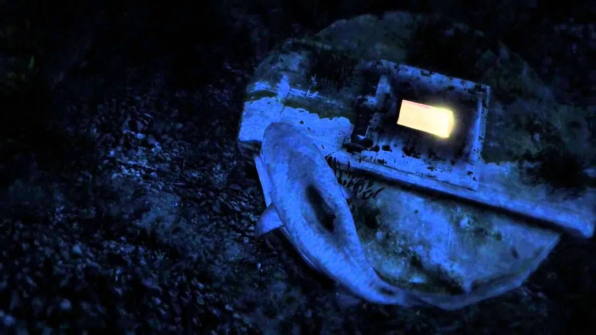
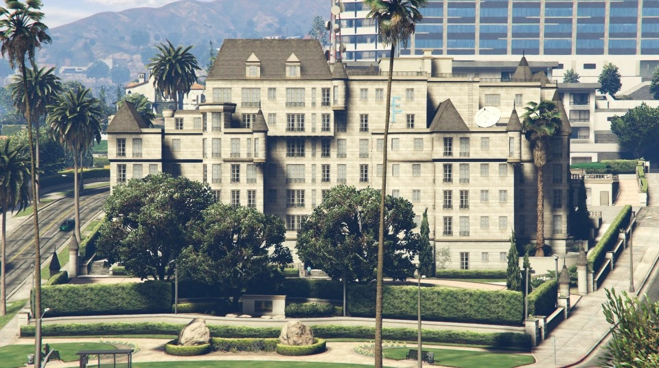

👻 1. Привид на горі Гордо
Це найвідоміша та найстрашніша офіційна пасхалка в грі. Рівно між 23:00 та 00:00 за ігровим часом на одній зі скель гори Гордо з'являється привид жінки. Якщо підійти занадто близько, вона зникає, а на камені залишається написане кров'ю ім'я «JOCK».
Це привид Джолін Кренлі-Еванс. Її чоловік, Джок Кренлі (відомий у грі каскадер і політик), штовхнув її зі скелі під час прогулянки. Найстрашніше те, що якщо спуститися під скелю в цей час, можна почути її далекий відлуння-крик.
.jpg)
🕵 2. Серійний убивця «Нескінченність» (Merle Abrahams)
У грі є повноцінна історія про маніяка Мерла Абрагамса, який був схиблений на цифрі 8 (символ нескінченності). В пустелі СЕНДІ-ШОРС можна знайти його спалену хату, розписану дивними дитячими віршиками про 8 жертв.
Якщо розгадати його загадки-малюнки, то на самому півночі карти, на дні океану, можна знайти 8 загорнутих у пластик людських тіл. Маніяк помер у в'язниці, так і не розкривши поліції це місце.
.jpg)
👽 3. Замерзлий пришелець та НЛО
ема інопланетян пронизує всю гру, але деякі знахідки викликають дискомфорт:
У найпершій місії-пролозі в Північному Янктоні, якщо з'їхати на машині під залізничний міст, у замерзлій річці можна побачити справжнього замороженого гуманоїда.
Зловісні НЛО: Після 100% проходження гри на карті з'являються літаючі тарілки. Одне з НЛО ширяє над горою Чилиад о 3:00 ночі під час грози, а інше — затонуле та поросле водоростями — лежить у повній темряві на морському дні на півночі. При наближенні до деяких працюючих тарілок техніка гравця вимикається, і чути неприємний високочастотний звук.
👁 4. Культ Альтруїстів
У лісах гори Чиліад розташований табір «Культу Альтруїстів» — радикальних нудистів-пенсіонерів, які ненавиділи покоління міленіалів. Граючи за Тревора, ви можете привозити їм випадкових попутників, яких вони, за натяками сюжету, приносили в жертву і їли. Якщо зайти на їхній офіційний внутрішньоігровий сайт через телефон, весь текст буде написаний дивним ієрогліфічним кодом, а на стінах їхнього табору зображені зловісні малюнки сонця та очей.
🔊 5. Люк «Залишитися в живих» (Lost) та таємничий стукіт
Глибоко на дні океану біля східного узбережжя розташований закритий металевий люк, з віконця якого пробивається яскраве світло (пряма відсылка до серіалу Lost). Якщо підпливти до нього занадто близько без субмарини, величезний тиск води моментально вб'є персонажа.
Якщо ж слухати здалеку, з люка лунає постійний стукіт. Фанати розшифрували цей код Морзе: там зациклено вистукується фраза «Hey, you never call, how d'you fancy going bowling?» («Хей, ти ніколи не дзвониш, як щодо сходити в боулінг?») — страшний та водночас кумедний привіт від Романа з GTA IV.

Страшний і дивний факт: Культ «Епсілон» знає, що вони знаходяться всередині комп'ютерної гри
У релігії Епсілон є головна священна книга — «Трактат Епсілон» (Epsilon Tract). Якщо уважно почитати уривки з цієї книги (або тексти на їхньому офіційному сайті), стає зрозуміло, що лідери культу виявили «код всесвіту»:
Згадка про розробників: В одному з релігійних віршів культу написано: «Світ був створений 157 років тому тим, хто посміхається і тримає в руках інструмент формування». Якщо порахувати, то для світу GTA це натяк на творців гри та ігровий рушій.
Зміна реальності: Культистки часто повторюють фразу: «Якщо ви бачите дерево, якого не було секунду тому — це воля Краффа». Це пряме та дуже моторошне описання «прогрузки текстур» (pop-in), коли об'єкти в грі з'являються з нічого прямо перед очима гравця через слабке залізо або швидку їзду.
Безсмертя і «респавн»: Кріс Формаж у своїх промовах стверджує, що «смерті немає, є лише перезавантаження у правильному місці». Вони буквально описують механіку того, як головні герої гри після смерті просто з'являються біля найближчої лікарні живими і здоровими.
Культ «Епсілон» — це не просто пародія на реальну саєнтологію, це єдина організація в GTA 5, яка усвідомлює, що весь їхній світ є симуляцією.
